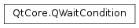

QWaitCondition¶
Synopsis¶
Functions¶
- def
notify_all() - def
notify_one() - def
wait(lockedMutex[, time=ULONG_MAX]) - def
wait(lockedReadWriteLock[, time=ULONG_MAX]) - def
wakeAll() - def
wakeOne()
Detailed Description¶
The
PySide2.QtCore.QWaitConditionclass provides a condition variable for synchronizing threads.
PySide2.QtCore.QWaitConditionallows a thread to tell other threads that some sort of condition has been met. One or many threads can block waiting for aPySide2.QtCore.QWaitConditionto set a condition withPySide2.QtCore.QWaitCondition.wakeOne()orPySide2.QtCore.QWaitCondition.wakeAll(). UsePySide2.QtCore.QWaitCondition.wakeOne()to wake one randomly selected thread orPySide2.QtCore.QWaitCondition.wakeAll()to wake them all.For example, let’s suppose that we have three tasks that should be performed whenever the user presses a key. Each task could be split into a thread, each of which would have a
PySide2.QtCore.QThread.run()body like this:while True: mutex.lock() keyPressed.wait(mutex) do_something() mutex.unlock()Here, the
keyPressedvariable is a global variable of typePySide2.QtCore.QWaitCondition.A fourth thread would read key presses and wake the other three threads up every time it receives one, like this:
while True: getchar() keyPressed.wakeAll()The order in which the three threads are woken up is undefined. Also, if some of the threads are still in
do_something()when the key is pressed, they won’t be woken up (since they’re not waiting on the condition variable) and so the task will not be performed for that key press. This issue can be solved using a counter and aPySide2.QtCore.QMutexto guard it. For example, here’s the new code for the worker threads:while True: mutex.lock() keyPressed.wait(&mutex) count += 1 mutex.unlock() do_something() mutex.lock() count -= 1 mutex.unlock()Here’s the code for the fourth thread:
while True: getchar() mutex.lock() # Sleep until there are no busy worker threads while count > 0: mutex.unlock() sleep(1) mutex.lock() keyPressed.wakeAll() mutex.unlock()The mutex is necessary because the results of two threads attempting to change the value of the same variable simultaneously are unpredictable.
Wait conditions are a powerful thread synchronization primitive. The Wait Conditions Example example shows how to use
PySide2.QtCore.QWaitConditionas an alternative toPySide2.QtCore.QSemaphorefor controlling access to a circular buffer shared by a producer thread and a consumer thread.
-
class
PySide2.QtCore.QWaitCondition¶ Constructs a new wait condition object.
-
PySide2.QtCore.QWaitCondition.notify_all()¶ This function is provided for STL compatibility. It is equivalent to
PySide2.QtCore.QWaitCondition.wakeAll().
-
PySide2.QtCore.QWaitCondition.notify_one()¶ This function is provided for STL compatibility. It is equivalent to
PySide2.QtCore.QWaitCondition.wakeOne().
-
PySide2.QtCore.QWaitCondition.wait(lockedMutex[, time=ULONG_MAX])¶ Parameters: - lockedMutex –
PySide2.QtCore.QMutex - time – long
Return type: PySide2.QtCore.boolReleases the
lockedMutexand waits on the wait condition. ThelockedMutexmust be initially locked by the calling thread. IflockedMutexis not in a locked state, the behavior is undefined. IflockedMutexis a recursive mutex, this function returns immediately. ThelockedMutexwill be unlocked, and the calling thread will block until either of these conditions is met:- Another thread signals it using
PySide2.QtCore.QWaitCondition.wakeOne()orPySide2.QtCore.QWaitCondition.wakeAll(). This function will return true in this case. timemilliseconds has elapsed. IftimeisULONG_MAX(the default), then the wait will never timeout (the event must be signalled). This function will return false if the wait timed out.
The
lockedMutexwill be returned to the same locked state. This function is provided to allow the atomic transition from the locked state to the wait state.- lockedMutex –
-
PySide2.QtCore.QWaitCondition.wait(lockedReadWriteLock[, time=ULONG_MAX]) Parameters: - lockedReadWriteLock –
PySide2.QtCore.QReadWriteLock - time – long
Return type: PySide2.QtCore.boolReleases the
lockedReadWriteLockand waits on the wait condition. ThelockedReadWriteLockmust be initially locked by the calling thread. IflockedReadWriteLockis not in a locked state, this function returns immediately. ThelockedReadWriteLockmust not be locked recursively, otherwise this function will not release the lock properly. ThelockedReadWriteLockwill be unlocked, and the calling thread will block until either of these conditions is met:- Another thread signals it using
PySide2.QtCore.QWaitCondition.wakeOne()orPySide2.QtCore.QWaitCondition.wakeAll(). This function will return true in this case. timemilliseconds has elapsed. IftimeisULONG_MAX(the default), then the wait will never timeout (the event must be signalled). This function will return false if the wait timed out.
The
lockedReadWriteLockwill be returned to the same locked state. This function is provided to allow the atomic transition from the locked state to the wait state.- lockedReadWriteLock –
-
PySide2.QtCore.QWaitCondition.wakeAll()¶ Wakes all threads waiting on the wait condition. The order in which the threads are woken up depends on the operating system’s scheduling policies and cannot be controlled or predicted.
-
PySide2.QtCore.QWaitCondition.wakeOne()¶ Wakes one thread waiting on the wait condition. The thread that is woken up depends on the operating system’s scheduling policies, and cannot be controlled or predicted.
If you want to wake up a specific thread, the solution is typically to use different wait conditions and have different threads wait on different conditions.
© 2018 The Qt Company Ltd. Documentation contributions included herein are the copyrights of their respective owners. The documentation provided herein is licensed under the terms of the GNU Free Documentation License version 1.3 as published by the Free Software Foundation. Qt and respective logos are trademarks of The Qt Company Ltd. in Finland and/or other countries worldwide. All other trademarks are property of their respective owners.